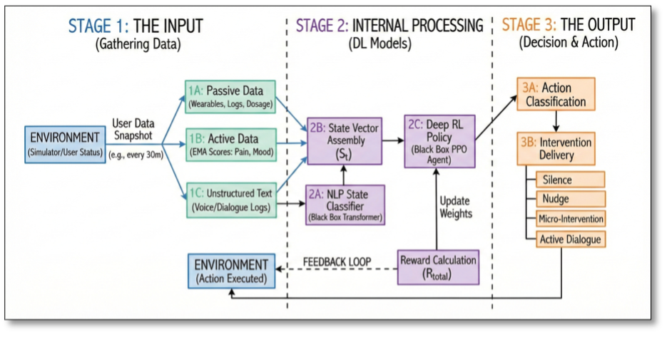

Rehabilitation AI Partner
AI Systems Engineer
A production-oriented JITAI system for adaptive rehabilitation support across long recovery timelines.
The architecture combines longitudinal reinforcement learning with psychological-state detection to personalize intervention timing and intensity rather than relying on static reminders.
Design emphasis is placed on policy behavior over time, balancing adherence support with intervention burden in a system that can be trained safely before deployment.

Problem
Rehabilitation success depends on sustained daily adherence, but most intervention systems use fixed prompting strategies that ignore behavioral drift, psychological state, and delayed consequences of intervention decisions.
- Static prompting patterns can create intervention fatigue and habituation over time.
- Clinicians have limited visibility into psychological state between structured follow-ups.
- Simple contextual bandits are weak at modeling long-horizon behavior and delayed effects.
Solution
The system is designed as a Just-in-Time Adaptive Intervention engine powered by deep reinforcement learning. A transformer-based NLP classifier detects psychological state from user dialogue, and the output is fused with telemetry to build the decision state for policy selection.
A PPO policy agent then selects intervention intensity from a structured action space: Silence, Nudge, Micro-Intervention, or Active Dialogue. The decision process is framed as a full Markov Decision Process to capture delayed outcomes, with a synthetic User Simulator used for offline policy training prior to real deployment.
System Architecture

User Dialogue + Telemetry -> NLP Classifier (Psychological State Detection) -> State Vector Construction -> PPO Policy Network -> Action Selection (Silence / Nudge / Micro-Intervention / Dialogue) -> Intervention Delivery -> Reward Signal -> Policy Update (Offline in Simulator).
- Perception layer: Transformer NLP models infer Change Talk, Sustain Talk, and Neutral intent signals.
- State representation layer: Psychological state, pain signals, step counts, and recent intervention dosage are fused into policy state.
- Policy layer: PPO selects intervention actions under uncertainty and delayed feedback.
- Simulation and training layer: Digital Twin environment supports safe offline policy iteration.
- Intervention delivery layer: The chosen action is delivered as adaptive behavioral support.
Engineering Decisions
- Moved from contextual bandits to full deep RL to model temporal dependencies and delayed behavioral consequences.
- Selected PPO for stable policy optimization in stochastic user-behavior environments.
- Integrated psychological modeling directly into the state vector to inform intervention timing and intensity.
- Trained in a synthetic Digital Twin because online RL data collection is sample-inefficient and operationally risky.
- Included random and static clinical heuristic baselines to contextualize policy behavior during evaluation.
Validation & Iteration Strategy
Validation is executed offline in the synthetic environment through scenario-driven policy replay and controlled baseline comparison across random, heuristic, and PPO agents.
- Ablation runs remove burden-penalty terms to inspect intervention overuse and behavioral drift patterns.
- Stress tests target delayed reward dynamics to verify whether policy behavior remains stable over long horizons.
- Iteration reviews focus on adherence, psychological reinforcement patterns, and intervention fatigue behavior without relying on fabricated KPI reporting.
Design Constraints
- Deep RL remains sample-inefficient and requires careful simulation design before field use.
- Distribution shift risk exists between synthetic user behavior and real patient behavior.
- Policy quality depends heavily on Digital Twin fidelity and realistic behavioral assumptions.
- Final deployment requires structured human-in-the-loop validation with clinicians.
My Role
- Designed the full JITAI architecture from signal ingestion through intervention policy selection.
- Defined the reinforcement learning state space and intervention action space.
- Implemented the PPO-based policy agent.
- Designed the Digital Twin simulation environment for offline policy training.
- Integrated transformer-based NLP classification for psychological state inference.
- Structured the reward function to balance adherence support against intervention fatigue.
- Designed baseline agents and ablation workflows for comparative policy evaluation.